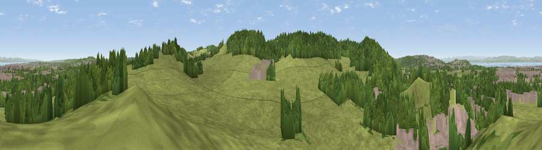

Viewpoint near Portbury
#20638 in England · top 41% of its area beats it · near PortburyThe view, rendered

A 360° render of this exact spot computed from the terrain model, tree cover and land cover — summer colours, afternoon light, calibrated against photographs of famous viewpoints. Real trees, hedges and buildings will differ in detail.
The panorama
Grey silhouette: terrain skyline in each direction (720 bearings, Earth curvature and refraction included). Dashed green: skyline with trees (+15 m) and buildings (+8 m) as obstacles. Blue strip: how far the ground is visible on each bearing.
Where the view opens
Wedge length = distance to the farthest visible ground on that bearing (vegetation-aware). Rings at 10, 25 and 50 km.
What fills the view
56% grassland · 28% woodland · 13% built-up · 1% water · 1% cropland
Angular shares of the visible panorama (visual magnitude), not map area. Landscape diversity 0.46 (0–1 Shannon).
Key numbers
More beautiful places nearby
The staircase of upgrades: each row has a higher view potential than everything closer. Driving times are estimates from straight-line distance, calibrated against real road routing — check an actual route before setting out.
| Place | Direction | Drive | Score |
|---|---|---|---|
| Viewpoint near Portbury | SSE · 1 km | ~3 min | 60.8 |
| Viewpoint near Portbury | SW · 1 km | ~4 min | 64.1 |
| Viewpoint near Hallen | ENE · 5 km | ~12 min | 66.7 |
| Viewpoint near Tickenham | WSW · 6 km | ~12 min | 72.1 |
| Dundry Hill | SSE · 10 km | ~19 min | 72.4 |
| Dial Hill | WSW · 10 km | ~19 min | 74.9 |
| Beacon Batch | S · 18 km | ~31 min | 79.4 |
| Bleadon Hill [Loxton Hill] | SW · 23 km | ~37 min | 79.6 |
51.47199, -2.71802 · source: screening · position refined by local search. Computed location — check access rights before visiting.